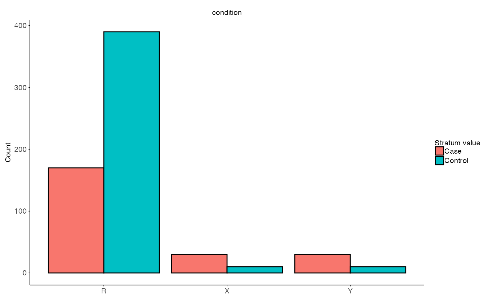

Permutation Correlation Difference
Source:vignettes/permutation_correlation_difference.Rmd
permutation_correlation_difference.RmdIntroduction
While interaction effects are useful to test the effect of ancestry
on single genes, correlation difference allows to look at a the global
trend across all genes. The same subset approach is used to correct for
the overrepresentation of EUR ancestry. This time the remaining
Europeans are used as a reference or test set to test the
correlation. In principle the idea is that the correlation (of effect
sizes of the relationship) must be higher between the remaining
Europeans and the EUR-subset than between the remaining Eurpeans and
non-Europeans. Also in this case permutations are used to derive a null
distribution in this case of the correlation differences between
EUR-subset and the compared ancestry. This gives a estimate of the
generalizability across all genes.
Data setup
library(CrossAncestryGenPhen)
library(ggplot2)
# Seed for reproducibility
seed <- 42
set.seed(seed)
# Simulate example data
p <- 100 # Number of genes
n_EUR <- 600
n_AFR <- 40
# Expression matrices for EUR and AFR ancestries
X <- matrix(rnorm(n_EUR * p), nrow = n_EUR, ncol = p)
Y <- matrix(rnorm(n_AFR * p), nrow = n_AFR, ncol = p)
colnames(X) <- colnames(Y) <- paste0("Gene_", seq_len(p))
# Metadata for EUR and AFR ancestries
# EUR: overrepresented compared to AFR
MX <- data.frame(
id = paste0("EUR_", seq_len(n_EUR)),
condition = factor(c(rep("Control", 400), rep("Case", 200))),
ancestry = "EUR"
)
# AFR: underrepresented compared to EUR
MY <- data.frame(
id = paste0("AFR_", seq_len(n_AFR)),
condition = factor(c(rep("Control", 10), rep("Case", 30))),
ancestry = "AFR"
)
# Rownames of matrix must be smaple ids
rownames(X) <- MX$id
rownames(Y) <- MY$id
# Visualize sample size imbalance
meta <- rbind(MX, MY)
# Plot
ggplot(meta, aes(x = ancestry, fill = condition)) +
geom_bar(position = "dodge", color = "black") +
labs(
title = "Condition Imbalance Across Ancestries",
x = "Ancestry",
y = "Sample Count",
fill = "Condition"
) 
Single subset run of permutation correlation effect
The function perm_correlation_difference() calculates
the correlation to the reference set
stratify_col <- "condition" # Column to stratify on
# Split the data into stratified sets
split <- split_stratified_ancestry_sets(
X = X,
Y = Y,
MX = MX,
MY = MY,
g_col = stratify_col,
seed = 42
)
# Visulaize stratified sets
plot_stratified_sets(
MX = split$test$M,
MY = split$inference$M,
MR = split$train$M,
g_col = stratify_col
)
# Permutation correlation difference
B <- 100 # Number of permutations
method = "pearson" # Correlation coefficient
perm_res <- perm_correlation_difference(
X = split$test$X,
Y = split$inference$X,
R = split$train$X,
MX = split$test$M,
MY = split$inference$M,
MR = split$train$M,
g_col = stratify_col,
method = method,
B = B,
seed = seed
)
str(perm_res)
#> List of 3
#> $ summary_stats:'data.frame': 1 obs. of 6 variables:
#> ..$ feature : chr "Global"
#> ..$ T_obs : num 0.0748
#> ..$ XR : num -0.0108
#> ..$ YR : num 0.064
#> ..$ p_param_value: num 0.591
#> ..$ p_emp_value : num 0.644
#> $ T_null : num [1:100, 1] -0.0121 0.1882 0.0257 0.1055 -0.0015 ...
#> ..- attr(*, "dimnames")=List of 2
#> .. ..$ : NULL
#> .. ..$ : chr "T_null"
#> $ B_used : int 100The output of the function contains three items:
summary_stats: Contains estimated difference in correlation (T_obs) andp_valuesper features. It also contains the correlation values to the referenceXRandXY, respectively.T_null: The observed null distribution for each feature across permutations.B_used: The number of permutation iterations used to estimate the null distribution.